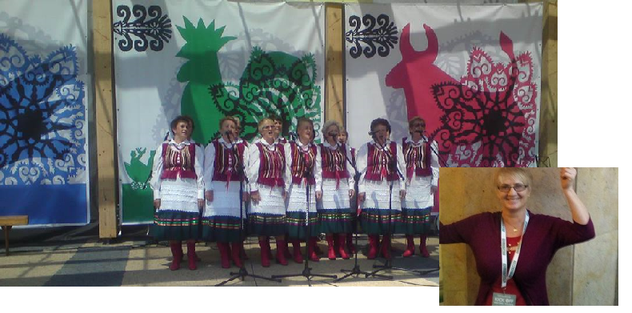

Pochodzę z województwa Lubelskiego, a dokładniej z miejscowości Janów Lubelski. Obecnie mieszkam w Kluczycach znajdujących się w giminie Secemin, w województwie Świętokrzyskim
Moją pasją jest sztuka. Poświęcam wiele czasu na malowanie obrazów, haftowanie, koronkarstwo, pisanie poezji, czy choćby decopuage. Od wielu lat staram się pokazywać swą twórczość, w różnych miejscach. Uważam, że sztuka powinna nam towarzyszyć przez całe życie, gdyż oddaje całe piękno, które nas otacza i podkreśla jego wartość.
uczesniczy w wielu literackich konkursach i bierze czynny udział w wydarzeniach i wystawach.Swoje obrazy przekazuje na cele społeczne i charytatywne ,jej obrazy znajdują się w wielu domach w Polsce i za granicą .w młodości jak zresztą wielu autorów pisała do szuflady .Dziś może sie poszczycić wydaniem 15 zbiorów tomików poetyckich kilku utworów prozatorskich , 2 bajek i opowiadań oraz 4 kolorowanek .Pasją sa takze robótki reczne ,hafty ,,koronki ,serwety , biezniki różne kolaże ,mokre na mokrym,rysunek lawowany ,malowanie watą ,frottage inaczej frotaż,gwasz ,batik ,wydrapywanki kolorowe,obrazy z wiórków ,wytwory z masy solnej ,rzeźby mydlane ,kompozycje z wosku i koralików,,malowanie na szkle ,mozaiki skorupkowe,malowanie świecą ,prace z makaronu i kasz różnych ,frotaż liści ,wycinanki z papieru ,wyszywanki na papierze ,wyszywanki na papierze haft matematyczny quilling ,origami i inne ciekawe pomysły . Społecznie prowadzi warsztaty plastyczne dla dzieci i młodzieży ,śpiewa w Zespole Cyraneczka w Psarach ,jest jurorem w ogólnopolskim konkursie literackim Wespazjana Kochowskiego w Szczekocinach i sponsorem nagród . Działa społecznie i charytatywnie w różnych obszarach działalności ,Była inicjatorem i współorganizatorem Przeglądu Zespołów Ludowych w Seceminie .Zdobyłam wiele nagród i wyróżnień .W 2012 uhonorowana została Nagrodą Starosty Włoszczowskiego za osiągnięcia w dziedzinie twórczości artystycznej ,upowszechniania i ochrony kultury ,Laureatka Plebiscytu Echa Dnia kobieta Przedsiębiorcza 2012 ,2013, 2016 ,
zajęła także w tymże plebiscycie,2012 i 2013 wojewódzkim 4 i 10 miejsce .Została też zdobywczynią tytułu Człowieka Roku 2017 w powiecie włoszczowskim w kategorii kultura a w 2018 Człowiek Roku z działalności społecznej i charytatywnej.W połowie czerwca 2017 r.otrzymała Świętokrzyską Nagrodę Artystyczną Scyzoryki w kategorii , literatura poezja , 23 listopada 2017 r.otrzymała Nagrodę Marszałka Województwa Świętokrzyskiego za 25 lat pracy artystycznej .Jej dorobek jest pełen pasji i niepowtarzalnego uroku ,wpisuje się na trwałe w kulturę ziemi świętokrzyskiej .Liczne sukcesy pokazują ,że warto mieć marzenia i nad sobą pracować .Pasje rozwijają i wzbogacają duchowo ,tworzy z potrzeba serca dla siebie ,dzieci i lokalnej społeczności .Ze swej twórczości i działalności czerpie radość życia i zadowolenie .nie wyobraża sobie życia bez pisania i malowania ,jest osobą niezwykle wrażliwą ,dlatego też otwiera swoje serce dla innych. Ma czwórkę dzieci -Dawida ,Sebastiana ,Tomasza i Paulinę które dorosły i opuściły rodzinny dom .
w niedługim czasie wyda książkę napisano prozą ,w środowisku lokalnym spostrzegana jest jako osoba bardzo twórcza w wierszach cechuje bezpośredniość ,szczerość i prostota .Pisze utwory o tematyce patriotycznej ,przyrodniczej ,o uroczystościach lokalnych ,o miłości ,o sprawach codziennych,pisze o tematyce religijnej a także aforyzmy i cytaty .o swoich janowskich stronach ,o nadziei która powinna być w każdym z nas ,bo wówczas lepiej się żyje .Dzieli się swoimi refleksjami ,przemyśleniami ,każdy wiersz to refleksja nad życiem ,rozmową z bliskimi pisze z przyjemności z wewnętrznej potrzeby ducha i serca .Mieszka w dużym domu pełnym jej prac obrazów malarskich ,hafciarskich ,dom otoczony dużym ogrodem pełen kwiatów .mottem są zawsze te słowa ''Że nie wystarczy urodzić się człowiekiem ,trzeba jeszcze być człowiekiem ''Czynnie uczestniczy w pracach wielu organizacji ,organizuje wystawy twórczości ,uczy wszelkimi dostępnymi metodami wrażliwości na swoją i nie tylko swoją sztukę .Jako malarka tworzy w różnych technikach ,jest malarstwo olejne ,temperowe ,akrylowe.efekt twórczych technik wynika z wnikliwej obserwacji natury ,faktury ,od lat pisze piosenki a jest ich około 40 .